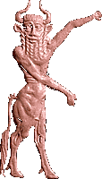
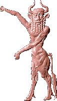

Gods, Goddesses, Demons and MonstersThere were hundreds of gods who were responsible for everything in the world, from rivers and trees to making bread and pottery. Each city was protected by its own special god or goddess and their family. Large temples were built in the centre of the city for these gods to live in. Priests looked after the gods with special rituals. There were also smaller temples throughout the city where ordinary people could make offerings.  Demons were created by the gods with human bodies and animal or bird heads. They could be either evil or good. Monsters were a mixture of animals and birds.
| ||||||||